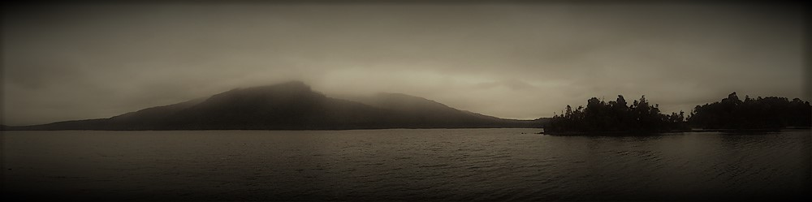

„Adler. Tajemnica zamku Bazina”
Intrygująca, wielowątkowa opowieść, w której przygoda splata się z tajemnicą i grozą. Pełna niezwykłych, baśniowych miejsc, barwnych postaci i humorystycznych dialogów.
Inni o ADLERZE
-
czytanienaplatanie
Całość oddaje atmosferę baśniowej opowieści przygodowej ze szczyptą fantastyki, choć biorąc pod uwagę jej wielowątkowość, jest to spore uogólnienie.
-
Booktwist
Świetna książka. Te dialogi, humor, wszystko naturalne, niewymuszone, z dowcipem, ironią i wyobraźnią.
-
Dorota Grabowska
Tajemnicze zwierzęta i gdzie je znaleźć? Na pewno w książce Marty Merriday.
-
Oaza Recenzji
Książkę przeczytałam z zainteresowaniem, dając się wciągnąć w coraz to bardziej rozbudowaną i ekscytującą akcję.
-
Czytelnia Patrycji
Powieść dopracowana w każdym najmniejszym szczególe. Opisy flory i fauny fascynują, ukazując świat mroczny i złowieszczy, który stanowi wspaniałe tło dla fabuły.
-
Lady Margot
To debiut, który z powodzeniem mógłby zdeklasować niejedną pozycję z listy bestsellerów.
-
Renata Grześkowiak
Ponad kilogram świetnej przygody w twardej oprawie!
Redaktor, Wydawnictwo Psychoskok
-
Bookmoment
Powieść wielowątkowa, dokładnie rozplanowana, sensowna i przemyślana, która winna urzec niebanalnym piórem.
-
Światy Alternatywne
Adler przypadł mi do gustu. Nie jest to niepokonany gieroj, jednak kilka sztuczek zna.
-
Mniej niż 0
ŚWIETNA historia, zupełnie INNA.

Kiedy inni studenci zoologii łapali chrząszcze
i opisywali je namiętnie w swoich dziennikach,
ja włóczyłem się po azjatyckiej tajdze,
tropiąc bestie,
o których milczały uniwersyteckie skrypty.
Świat Adlera
Poznaj Adlera – młodego zoologa i łowcę egzotycznych bestii.
Świat Adlera to świat, w którym rzeczywistość przeplata się z mroczną baśnią.
Człowiek zalał naturę betonem i wydaje mu się, że jest bezpieczny. Że kontroluje każdy zielony skrawek na mapie.
Syn szkockiego kłusownika wyrusza na południe Anglii, by rozwiązać tajemnicę lasów Sussex.
Adler jest studentem zoologii, zapalonym myśliwym i członkiem elitarnego Klubu Zoologów.
Pewnego dnia w siedzibie Klubu w Edynburgu zjawia się nieznajomy dżentelmen z Południa. Sir George Wyatt
opowiada Adlerowi historię o tajemniczych drapieżnikach, które nękają jego rodzinne miasteczko. Pelham to
odizolowany przysiółek, ściśnięty w kleszczach dzikiej natury. Daleko od cywilizacji, od miast. Wokół tylko
prastara, angielska knieja, pola i mokradła. Królestwo dzikiej fauny i matecznik bestii jak ze strasznej
baśni.
Sir George prosi Adlera o pomoc w zbadaniu sprawy. Adler wyrusza więc z Edynburga na południe Anglii, do
osobliwej krainy, którą zamieszkują bestie, farmerzy i arystokraci. W Pelham dochodzi do krwawych incydentów,
a wszystkie tropy zdają się prowadzić na Zamek. W zrujnowanej twierdzy na mokradłach zamieszkała banda
rosyjskich kłusowników. Czy mają coś wspólnego z atakami bestii?
"Adler. Tajemnica zamku Bazina" to pierwszy tom z cyklu "Bestiariusz Forbesa".
Data wydania: Październik 2018
Wersja papierowa: 600 stron
Długość audiobooka: 25 godzin
O Autorce
Pisarka, podróżniczka, outsider z wyboru. Piszę, włóczę się po świecie, obserwując przyrodę,
ludzi i ich małe imperia – miasta. W Edynburgu zdobyłam dyplom z Urban Planning, w Krakowie – z ekonomii, ale
wolę się tym nie afiszować, bo zasadniczo stronię od pracy najemnej. Po wyjeździe z Krakowa miałam kilka
dłuższych postojów w Edynburgu, południowej Anglii oraz Bawarii. Obecnie mieszkam w Australii.
Mroczny klimat i surowa przyroda Wysp Brytyjskich zainspirowały moją debiutancką powieść „Adler”.
W dawnym życiu próbowałam swoich sił w rozmaitych organizacjach: od brytyjskiego public sectora po charities i korpo. Wyniosłam z tych doświadczeń myśl, którą najlepiej ujął w słowa Joseph Conrad: „It’s extraordinary how we go through life with eyes half shut, with dull ears, with dormant thoughts”. Piszę od zawsze. Jako pisarz mam szansę uniknąć tego stanu, o którym mówi Conrad. Pisarz, jak Adler czy inny łowca, musi wyostrzyć zmysły, by chłonąć ten świat w najdrobniejszym detalu.